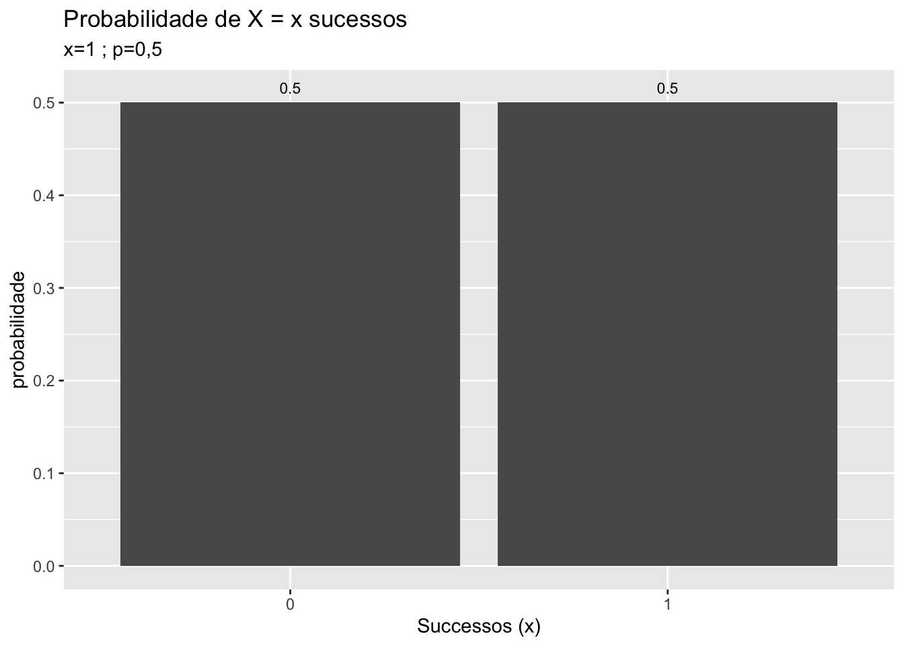
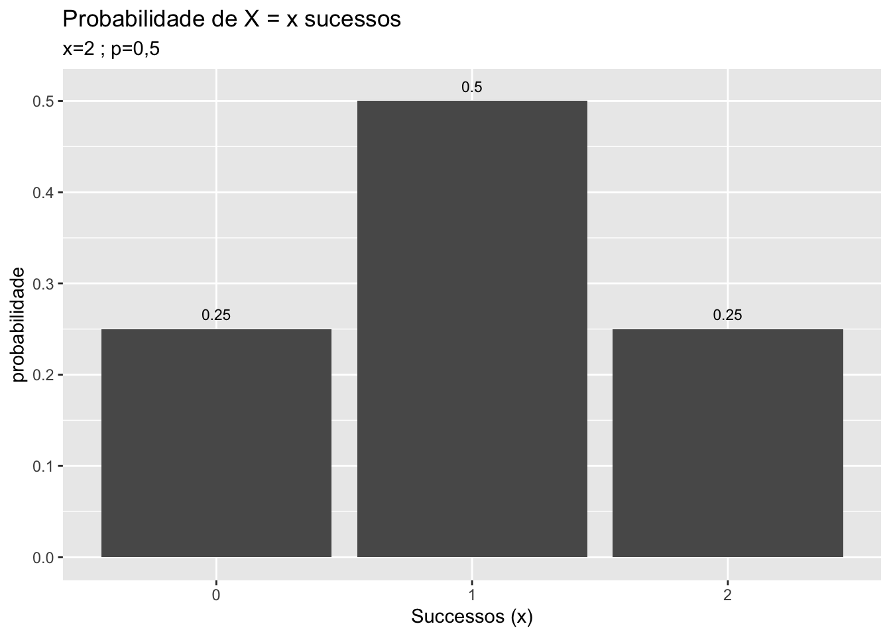
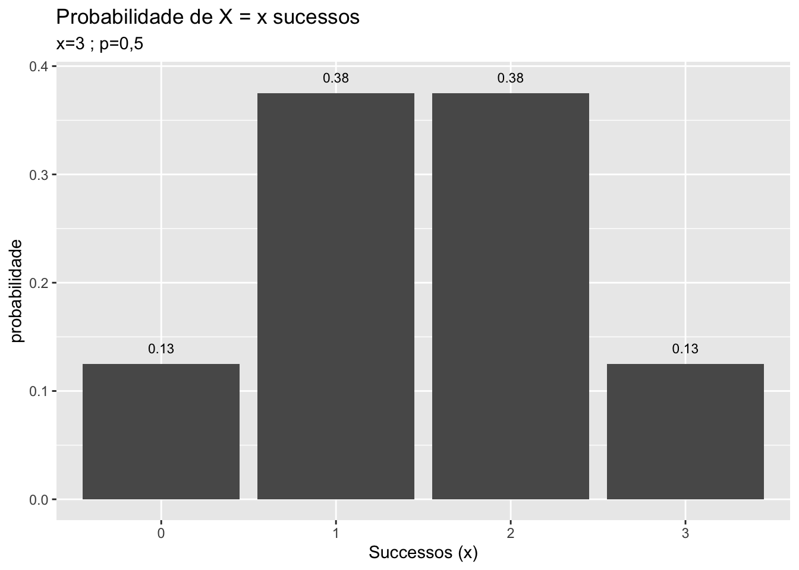
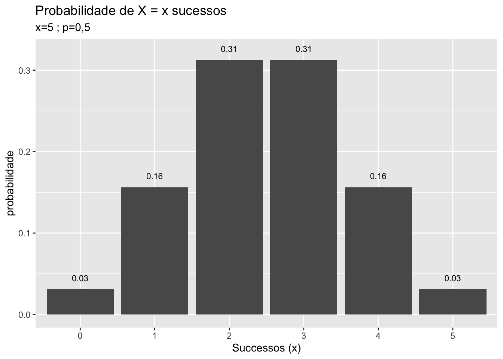

CAPÍTULO 5 Variável Aleatória Contínua
5.1 Distribuições contínuas
Para entender a diferença entre variável aleatória discreta e a variável aleatória contínua é necessário definir cada uma delas:
Variável Aleatório Discreta: assume valores específicos. Exemplo: número de clientes que entram na loja, número de mortes, número de nascimentos, etc.
Variável Aleatória Contínua: assume qualquer valor no domínio dos número reais. Por isso entre os valores 2 e 3, por exemplo, pode existir infinitos valores para uma variável aleatória contínua. Exemplo: peso, altura, preço de commodities, temperatura, quantidade de chuva em milímetros, etc.
Sartoris (2013) exemplica as duas situações de variáveis discretas e contínuas usando o exemplo de relógio digital e de relógio analógico considerando somente a hora como valor da variável. No caso do relógio digital a mudança de valor ocorre de forma discreta, diferentemente da situação do relógio analógico que a mudança de horas é de forma gradual.
Para o caso discreto é possível calcular a probabidade para os valores específicos. Por isso \[ P(2<x<3) \neq P(2\leq x \leq 3) \neq P(2 < x \leq 3) \neq P(2\leq x < 3) \]
Já para o caso contínuo não é possível calcular a probabilidade para um valor específico da variável. Inclusive, no limite, a probilidade de um valor específico para uma variável aleatória contínua é igual zero. Portanto,
\[ P(2<x<3) = P(2\leq x \leq 3) = P(2 < x \leq 3) = P(2\leq x < 3) \]
A situação do exemplo do relógio analógico do Sartoris (2013), como a mudança de hora ocorre de forma gradual e a probabilidade é igual para qualquer valor da hora, trata-se de uma distribuição de probabilidade uniforme contínua. Grafico gerado usando a função gglot do pacote ggplot2.
library(ggplot2)
hora <- c(1,2,3,4,5,6,7,8,9,10,11,12)
prob <- c(1/12,1/12,1/12,1/12,1/12,1/12,1/12,1/12,1/12,1/12,1/12,1/12)
horaanalogica <- as.data.frame(cbind(hora, prob))
horaanalogica## hora prob
## 1 1 0.08333333
## 2 2 0.08333333
## 3 3 0.08333333
## 4 4 0.08333333
## 5 5 0.08333333
## 6 6 0.08333333
## 7 7 0.08333333
## 8 8 0.08333333
## 9 9 0.08333333
## 10 10 0.08333333
## 11 11 0.08333333
## 12 12 0.08333333ggplot(horaanalogica, aes(hora, prob)) +
geom_line() +
xlim(0,13) + ylim(0,0.20) +
scale_x_continuous(breaks = seq(1,12, by = 1))## Scale for 'x' is already present. Adding another scale for 'x', which will
## replace the existing scale.
FIGURA 5.1: Um exemplo de distribuição uniforme Contínua.
Nesta situação apresentada na figura 5.1, matematicamamente faz sentido calcular a probabilidade para um intervalo de valores da variável e não para valores específicos com é no caso da variável aleatória discreta. Dessa forma com a função de probabilidade da distribuição, denominada de função densidade de probabilidade (f.d.p.), pode-se obter a probabilidade obtendo a área abaixo da curva desta função. Matematicamente, a probabilidade pode ser obtida através da integral definida desta função para o intervalo de valores em questão.
Note que para \(f(x)\) ser função densidade de probabilidade, precisa atender as seguintes propriedades definidas pela teoria da probabilidade:
- a soma das probabilidades para todo os valores definidos da variável \(x\) dever ser igual a 1.
- a probabilidade obtida através de \(f(x)\) não pode ser negativa.
No exemplo da relógio analógico a probabilidade da hora estar entre 2 e 3 é a área da curva ou reta da distribuição uniforme contínua cujo valor constante da probabilidade é \(1/12\). O intervalo entre 2 e 3 proporciona um intervalo equivalente a unidade, uma vez que intervalo pode ser calculado entre a diferença entre o valor final e o valor inicial. Dessa forma:
\[ P(2 < x < 3) = \dfrac{1}{12} \times \left( 3 - 2 \right) = \dfrac{1}{12}, \] ou seja, \[ P(2<x<3) = P(2\leq x \leq 3) = P(2 < x \leq 3) = P(2\leq x < 3) = \dfrac{1}{12} \]
Exemplo numérico sobre função densidade de probabilidade
Exemplo 4.1.3 da página 79 do Sartoris (2013). Dada a função densidade de probabilidade da variável aleatória contínua mostrada a seguir
\[ f(x) = \begin{cases} Ax~~0\leq x \leq 3\\ 0,~~X<0~\text{ou}~x>3\\ \end{cases} \]
- Determine o valor de A.
Resposta: Dado que \(f(x) = Ax\)
\[ f(3) = 3A \] para \(x = 3\) e \[ f(0) = 0 \] para \(x=0\)
Graficamente seria um triângulo de de base 3 e altura de 3A. Como a função definida de modo que \[ f(x) \geq 0 \] ou seja resulte valores não-negativos, basta igualar a área a 1, pois a soma das probabilidades para todos os valores definidos para a variável \(x\) deve ser igual a 1. Portanto a probabilidade é a área correspondente ao triangulo de base 3 e altura 3A. Ou seja, \[ \dfrac{3A \times 3}{2} = 1 \] e por isso \[ A = \dfrac{2}{9} \] Ou seja, \[ f(x) = \dfrac{2}{9} x \]
- Determine a probabilidade de que \(x\) esteja entre 2 e 3.
Para \(x=2\) se tem \[ f(2) = \dfrac{2}{9}\times 2 = \dfrac{4}{9} \] e para \(x=3\) \[ f(3) = \dfrac{2}{9} \times 3 = \dfrac{2}{3} \] A área correspondente a probababilidade de \(x\) estar entre 2 e 3 pode ser obtida subtraindo a área do triângulo maior que seria com \(x\) entre 0 e 3 e o triângulo menor com \(x\) entre 2 e 3. Ou seja, a área do triangulo maior é calculado como
\[ \text{triângulo menor} = 3\times \dfrac{2}{3} \times \dfrac{1}{2} = 1 \]
e a área do triângulo maior é calculado como
\[ \text{triângulo menor} = 2\times \dfrac{4}{9} \times \dfrac{1}{2} = \dfrac{4}{9}. \] Assim a diferença das áreas do triângulo maior e do triângulo menor é igual a \(5/9\). Ou seja,
\[ P(2<x<3) = 1 - \dfrac{4}{9} = \dfrac{5}{9} \]
Segundo exemplo númerico sobre função densidade de probabilidade
Exemplo 4.1.4 da página 80 do Sartoris (2013). Dada da f.d.p. ded uma variável aleatória contínua,
\[ f(x) = \begin{cases} Ax^2~~\text{para }~0\leq x \leq 1\\ 0,~~\text{para }~x<0~\text{ou}~x>1\\ \end{cases} \]
- Determine o valor da constante A. Note que a função já não é mais do tipo linear e por isso não é necessário utilizar a integral da função em questão para calcular a probabilidade. Considerando novamente que a soma das probabilidades para todos os valores definidos para a variável \(x\) deve ser igual a um, se tem
\[ \int_{-\infty}^{+\infty} f(x)\text{d}x = 1 \] Para este exemplo, a função \(f(x)\) só está definido para os valores entre 0 e 1, sendo que para valores de \(x\) menor que 0 e valores de \(x\) maior que 1 a função \(f(x)\) assume valor igual a zero. Portanto,
\[ \int_{0}^{1} Ax^2\text{d}x = 1 \] Como A é constante, pode-se colocar para fora da integral
\[ A\int_{0}^{1} x^2\text{d}x = 1 \] Calculando a integral definida \[ A\left[ \dfrac{x^3}{3} \right]_{0}^{1} = 1 \] Avaliando para os valores 1 e 0 e depois realizando a diferença \[ A\left[ \dfrac{1}{3} - \dfrac{0}{3} \right]_{0}^{1} = 1 \] Ou seja, \[ A = 3. \] Ou seja a função é
\[ f(x) = 3x^2. \]
- Dtermine a probabilidade de que \(x\) esteja entre 0,5 e 1.
Primeiramente verifica-se que tanto 0,5 como 1 são valores que estão dentro do intervalo de \(x\) definido para a função em questão. Por exemplo, se um dos limites fosse igual a 2, consideraria \(x=1\) pois \(f(x)=0\) para \(x>1\). Por isso basta calcular a integral da função para os valores de \(x\) entre 0,5 e 1. Ou seja,
\[ P(0,5\leq x \leq 1) = \int_{0,5}^{1} 3x^3\text{d}x \] \[ P(0,5\leq x \leq 1) = \left[ \frac{3x^3}{3} \right]_{0,5}^{1} \] \[ P(0,5\leq x \leq 1) = 1^3 - 0,5^3 = 1 - 0,125 = 0,875. \] Resumindo, para que uma função qualquer seja uma função densidade de probabilidade precisa atender duas condições:
\[ \int_{-\infty}^{+\infty} f(x) \text{d}x = 1 \] e \[ f(x) \geq 0~~\text{para todos os valores de}~x \]
Exemplo numérico sobre a distribuição exponencial
O exemplo 4.1.5 da página 82 de Sartoris (2013) é uma simples aplicação para a distribuição exponencial. Dada a f.d.p. da varíável aleatória contínua \(x\) \[ f(x) = \begin{cases} Ae^{-\alpha x},~~\text{para }~x\geq 0 \\ 0,~~\text{para }~~x<0 \end{cases} \] a) Determine o valor de A. Então como foi informado no anunciado do exemplo numérico, essa distribuição especial é conhecida com distribuição exponencial. Como
\[ \int_{-\infty}^{+\infty} f(x) \text{d}x = 1 \]
e a função assume valores iguais a zero para valores negativos de \(x\), se tem
\[ \int_ {0}^{+\infty} A e^{-\alpha x} = 1. \] Como A é constante, pode-se colocar par fora da integral \[ A\int_{0}^{+\infty} e^{-\alpha x}\text{d}x = 1 \] e sabendo que a integral da função é um pouco diferente, considerando que há um \(\alpha\) multiplicando \(x\), temos
\[ A\left[ \dfrac{e^{-\alpha x}}{-\alpha} \right]_{0}^{+\infty} = 1 \]
\[ A\left[0 - \left(-\dfrac{1}{\alpha}\right)\right] = 1 \] Portanto,
\[ A = \alpha \]
5.1.1 Função de distribuição de variáveis contínuas
A semelhança do caso das variáveis discretas, a função de distribuição acumulada ou função de distribuição \(F(x)\) é a soma da probabilidades de todos os valores possíveis que a variável \(x\) pode assumir até o valor de \(x\) propriamente dito. Isso é feito através da integral da seguinte forma
\[ F(x) = \int_{-\infty}^{x} f(t) \text{d}t. \]
Portanto, matematicamente,\(f(x)\) é a derivda da função \(F(x)\) \[ f(x) = \dfrac{\text{d}F(x)}{\text{d}x}. \]
Exemplo numérico da função de distribuição
O exemplo 4.2.1 da página 83 do Sartoris (2013), trata-se da obtenção da função distribuição exponencial através da sua respectiva função densidade de probabilidade. Dada a função f.d.p.da dsitribuição exponencial, determine a função de distribuição correspondente.
\[ f(x) = \begin{cases} e^{-x},~~\text{para }~ x \geq 0\\ 0,~~\text{para } x< 0 \end{cases} \] Dado que a função só é definido para \(x\geq 0\), o limite de integração inferior é zero.
\[ F(x) = \int_{0}^{+\infty} f(t)\text{d}t \] substituindo a f.d.p. \[ F(x) = \int_{0}^{+\infty} e^{-t}\text{d}t \] lembrando a integral de \(e^{-x}\) e que todo número elevado a zero é igual a um \[ F(x) = \left[ -e^{-t} \right]_{0}^{x}. \] Assim, \[ F(x) = -e^{-x} + e^{0} \] e \[ F(x) = 1 - e^{-x} \] Portanto a função distribuição é dada por
\[ F(x) = \begin{cases} 1 - e^{-x},~~\text{para } x\geq 0 \\ 0,~~\text{para } x\leq 0 \end{cases} \]
Segundo Exemplo numérico sobre função de distrubuição
Exemplo 4.2.2 da página 84 de Sartoris (2013). Seja a função distribuição
\[ F(x) = \begin{cases} 0,5(x^3 + 1),~~\text{para } -1\leq x \leq 1\\ 0,~~\text{para }x < -1\\ 1, x > 1 \end{cases} \] determine a função densidade de probabilidade correspondente.
Resposta:
A função densidade de probabilidade é dado por
\[ f(x) = \dfrac{\text{d}F(x)}{\text{d}x} \]
\[ f(x) = \dfrac{\text{d}(0,5 x^2 + 1)}{\text{d}x} \]
\[ f(x) = 3 \times 0,5x^2 + 0 \]
\[ f(x) = 1,5 x^2 \]
Portanto, a função densidade de probabilidade é:
\[ f(x) = \begin{cases} 1,5x^2,~~\text{para } -1\leq x \leq 1\\ 0,~~\text{para }x < -1 ou x > 1 \end{cases} \] A função distribuição \(F(x)\), assim como a função densidade, deve atender dois requisitos:
- não pode ser negativa e deve ser menor ou igual a 1.
\[ 0\leq F(x) \leq 1 \],
- a soma das probabilidades de todos os valores da variável é igual a 1.
\[ \lim_{x \rightarrow \infty} F(x) = 1 \].
Estes requisitos são atendidos pelas funções distribuições \(F(x)\) dos exemplos numéricos anteriores.
5.1.2 Esperança e variância de variáveis aleatórias contínuas
A esperança matemática para uma variável aleatória contínua é a soma contínua de todos os valores da variável com sua respectivas probabilidades. Uma soma contínua é a integral e, por sua vez, a probabilidade é encontrada pela função densidade de probabilidade. Dessa forma, matematicamente a esperança é
\[ E(x) = \int_{-\infty}^{+\infty} x f(x)~\text{d}x. \] A variância por sua vez,
\[ Var(x) = E[x - E(x)]^2 \]
ou simplesmente
\[ Var(x) = E[x - \mu]^2 \] onde \(\mu\) é igual a média de \(x\). Em termos de integral fica
\[ Var(x) = \int_{-\infty}^{+\infty} (x- \mu)^2 \text{d}x \] Alternativamente \[ Var(x) = E(x^2) - [E(x)]^2 \] que em termos de integral fica \[ Var(x) = \int_{-\infty}^{+\infty} x^2 f(x)\text{d}x - \left[\int_{-\infty}^{+\infty} xf(x) \text{d}x \right]^2 \]
Exemplo numérico sobre esperança e variância
Exemplo 4.3.1. da página 85 do Sartoris (2013). Seja a f.d.p.
\[ f(x) = \begin{cases} 3x^2~~\text{para }~0\leq x \leq 1\\ 0,~~\text{para }~x<0~\text{ou}~x>1\\ \end{cases} \] a) Calcule o valor médio de \(x\).
Resposta:
Como a média pode ser calculada através de \(E(x)\) \[ E(x) = \int_{-\infty}^{+\infty} x f(x)~\text{d}x. \] se tem \[ E(x) = \int_{0}^{1}x3x^2\text{d}x \] \[ E(x) = 3\int_{0}^{1}x^3\text{d}x \] Calculando-se a integral \[ E(x) = 3\left[ \dfrac{x^4}{4}\right]_{0}^{1} \]
\[ E(x) = 3 \times \dfrac{1^4}{4} \]
\[ E(x) = \dfrac{3}{4} = 0,75 \]
- Calcule a variância de \(x\).
Resposta:
Tomando a fórmula da variância alternativa
\[ Var(x) = E(x^2) - [E(x)]^2 \]
que em termos de integral é
\[ Var(x) = \int_{-\infty}^{+\infty} x^2 f(x)\text{d}x - \left[\int_{-\infty}^{+\infty} xf(x) \text{d}x \right]^2 \] verifica-se que só falta só calcular \(E(x^2)\) para poder calcular a variância de \(x\). Ou seja,
\[ E(x^2) = \int_{0}^{1} X^23x^2 \text{d}x \]
\[ E(x^2) = 3\int_{0}^{1} x^4 \text{d}x \] calculando a integral \[ E(x^2) = 3\left[ \dfrac{x^5}{5} \right]_{0}^{1} \]
\[ E(x^2) = 3 \times \dfrac{1}{5} \]
\[ E(x^2) = \dfrac{3}{5} = 0,6. \] Assim a variância é
\[ Var(x) = E(x^2) - [E(x)]^2 \]
\[ Var(x) = 0,6 - (0,75)^2 = 0,6 - 0,5625 \]
\[ Var(x) = 0,0375 \]
- Calcule o desvio padrão de \(x\).
\[ dp(x) = \sqrt{0,0375} \]
\[ dp(x) \cong 0,194 \]
5.2 Distribuição Normal
Para entender a distribuição normal, tome a distribuição binomial com uma probabilidade \(p\) igual 0,5 e \(n\) tendendo ao infinito. Graficamente exemplifica-se com \(n=1,2,3,5,10\).




FIGURA 5.2: Da distribuição Binamial para a Distribuição Normal
Note na figura 5.2 que a medida que \(n\) aumenta a distribuição binomial assume um formato que é a de uma típica distribuição normal. Se no limite \(n\) tende ao infinito, a distribuição binomial perde o aspecto discreto na foma de “escada” e passa a ter um formato e aspecto de distribuição normal, figura 5.3, que é a referência para uma distribuição de variável aleatória contínua.
FIGURA 5.3: A distribuição Normal
Essa distribuição de probabilidade é conhecida com normal ou gaussiana e a sua função densidade de probabilidade é dada por:
\[ f(x) = \dfrac{1}{\sqrt{2\pi\sigma^2}}e^{\frac{(x-\mu)^2}{2\sigma^2}} \tag{5.1} \]
onde \(\mu\) é a média e \(\sigma\) é o desvio padrão da variável \(x\). Se a variável \(x\) tem distribuição normal ou é normalmente distribuída, é usual escrever com notação matemática da seguinte forma
\[ x \sim N(\mu,\sigma) \]
e deve ser lida da seguinte forma: \(x\) segue uma distribuição normal com média \(\mu\) e desvio padrão \(\sigma\). Em vez de desvio padrão essa notação matemática pode ter a variância \(\sigma^2\) no lugar do desvio padrão \(\sigma\).
Na função densidade de probabilidade da distribuição normal (5.1) os parâmetros média \(\mu\) e desvio padrão \(\sigma\) definem uma família de distribuições normais para a variável \(x\).
O parâmetro média \(\mu\) determina a posição da curva em relação à origem, enquanto o desvio padrão \(\sigma\) determina se a curva será mais “gorda”, ou seja, mais dispersa com maior desvio padrão, ou mais “magra”, ou seja mais concentrada com um desvio padrão menor.
O cálculo das probabilidades sob uma distribuição normal é bastante trabalhosa, uma vez que não existe uma função cuja derivada é \(e^{-x^2}\) e, por isso, o cálculo é feito por métodos numéricos. Por isso, tabela-se os valores das integrais da distribuição normal padronizada, ou seja, a distribuição normal com média \(\mu\) igual a zero e desvio padrão \(\sigma\) igual a zero.
\[ \mu = 0 \]
e
\[ \sigma = 1 \]
As variáveis normalmente distribuídas com média \(\mu\) diferente de zero e desvio padrão \(\sigma\) diferente de um
\[ \mu \neq 0 \]
e
\[ \sigma \neq 1 \]
podem ter os valores das probabilidades obtidas das tabelas de valores para uma distribuição normal padronizada, padronizando a variável \(x\), por exemplo, da seguinte forma
\[ z = \dfrac{x - \mu}{\sigma} \]
onde a variável \(z\) tem distribuição normal com média \(\mu\) igual a zero e desvio padrão \(\sigma\) igual a 1. Ou seja possui um distribuição normal padronizada para a qual pode-se usar os valores calculados e disponibilizados em tabelas que se encontram no apêndice da maioria dos livros de estatística e econometria. Na tabela com os valores da distribuição normal padronizada, usualmente denota-se a variável normal padronizada como \(z\). Outro detalhe da tabela da dstribuição normal padronizada é a disponibilidade dos valores das probabilidades para a metade da distribuição, ou seja, para os valores positivos de \(z\) pelo fato da distribuição normal ser simétrica. Portanto,
\[
P(0 < z < 1,23) = P(-1,23 < z < 0).
\]
Dessa forma, o maior valor de probabilidade encontrada na tabela para uma distribuição normal padronizada usualmente é aproximadamente igual a 0,5. Claro, existem tabelas que podem apresentar os valores para toda a distribuição e nestes casos o maior valor será aproximadamente igual a 1, pois os valores são em termos de função distribuição de probabilidade \(F(z)\).
Usando o R, a probabilidade de \(z\) estar entre zero e 1,23 é calculada através da função pnorm que entrega o valor de \(F(z)\).
## [1] 0.3907Ou seja
\[ P(0 < z < 1,23) = F(1,23) - F(0) \cong 0.3907. \]
Graficamente, usando o pacote ggplot2, fica mais fácil de visulizar a probabilidade de \(z\) estar entre zero e 1,23 que de é de 0.3907 na figura 5.4 que corresponde à área colorida.
FIGURA 5.4: Probabilidade z entre zero e 1,23
Note que o valor 0.3907 é o valor encontrado diretamente na tabela que apresenta valores de probabilidade somente para metade da distribuição, neste caso para \(0<z<+\infty\).
Quando os valores de \(z\) são maiores que zero, se tem uma outra situação que comumente aparece nos exercícios. Seja a probabilidade de \(z\) estar entre 0,27 e 1,43. Ou seja,
\[ P(0,27 < z < 1,43) \]
Note que a probabiliade corresponde à área que está abaixo da curva da função densidade de probabilidade para \(z\) entre 0,27 e 1,43. Ou seja, a integral de \(f(z)\) entre 0,27 e 1,43. Usando-se a função distribuição de probabilidade \(F(z)\) corresponde a diferença entre \(F(1,43)\) e \(F(,27)\)
\[ P(0,27 < z < 1,43) = F(1,43) - F(0,27) \]
Na figura 5.5 fica claro o por quê da diferença entre \(F(z)\). Note que aqui a ideia é válida tanto para a metade da distribuição como para a distribuição completa incluindo a parte em que \(z<0\).
FIGURA 5.5: Probabilidade z entre 0,27 e 1,43
Para a situação em que se tem os valores das probabilidades tabulados somente para metade da distribuição se tem
\[ P(0,27 < z < 1,43) = P(0 < z < 1,43) - P(0 < z < 0,27), \] ou seja, \[ P(0,27 < z < 1,43) = [F(1,43) - F(0)] - [F(0,27) - F(0)]. \]
Usando o R, a probabilidade de \(z\) estar entre 0,27 e 1,43 pode ser calculada da seguinte forma
# Calculo de F(1,43) - F(0)
p2 <- round(pnorm(1.43, mean = 0, sd = 1, lower.tail = T) - pnorm(0, mean = 0, sd = 1, lower.tail = T),4)
p2## [1] 0.4236# Calculo de F(0,27) - F(0)
p1 <- round(pnorm(0.27, mean = 0, sd = 1, lower.tail = T) - pnorm(0, mean = 0, sd = 1, lower.tail = T),4)
p1## [1] 0.1064## [1] 0.3172Portanto,
\[ P(0,27 < z < 1,43) = 0.4236 - 0.1064 = 0.3172. \]
Alternativamente, se tem os valores das probabilidades para a distribuição completa na tabela ou se está usando o R para os cálculos
\[ P(0,27 < z < 1,43) = F(1,43) - F(0,27) \]
Usando o R, o cálculo da probabilidade de \(z\) estar entre 0,27 e 1,43 é simplesmente
p027z143r <- round(pnorm(1.43, mean = 0, sd = 1, lower.tail = TRUE) - pnorm(0.27, mean = 0, sd = 1, lower.tail = TRUE) ,4)
# Calculo de F(1,43)
p2r <- round(pnorm(1.43, mean = 0, sd = 1, lower.tail = T),4)
p2r## [1] 0.9236## [1] 0.6064## [1] 0.3172Portanto,
\[ P(0,27 < z < 1,43) = 0.9236 - 0.6064 = 0.3172. \]
Uma outra situação bastante comum nos exercícios é quando o limite inferior do intervalo é negativo e valor do limite superior é positivo. Considere o cálculo da probabilidade de \(z\) estar entre -1,38 e 0,97. Na figura 5.6 fica mais fácil visualizar qual a área a ser calculada que corresponde a probabilidade solicitada.
FIGURA 5.6: Probabilidade z entre -1,38 e 0,97
Considerando a situação em que a tabela tem apenas metade dos valores de probabilidade para a distribuição normal padronizada, o cálculo é
\[ P( -1,38 < z < 0,97) = P (-1,38 < z < 0) + P(0 < z < 0,97). \] Como a distribuição normal é simétrica, pode-se escrever \[ P( -1,38 < z < 0,97) = P (0 < z < 1,38) + P(0 < z < 0,97) \] ou \[ P( -1,38 < z < 0,97) = [F(1,38) - F(0)] +[F(0,97) - F(0)] \]
Usando o R, a probabilidade de \(z\) estar entre 0,27 e 1,43 pode ser calculada da seguinte forma
# Calculo de F(1,38) - F(0)
pf138f0 <- round(pnorm(1.38, mean = 0, sd = 1, lower.tail = T) - pnorm(0, mean = 0, sd = 1, lower.tail = T),4)
pf138f0## [1] 0.4162# Calculo de F(0,97) - F(0)
pf097f0 <- round(pnorm(0.97, mean = 0, sd = 1, lower.tail = T) - pnorm(0, mean = 0, sd = 1, lower.tail = T),4)
pf097f0## [1] 0.334## [1] 0.7502Portanto,
\[ P(0,27 < z < 1,43) = 0.4162 + 0.334 = 0.7502. \]
Alternativamente, se tem os valores das probabilidades para a distribuição completa na tabela ou se está usando o R para os cálculos, calcula-se
\[ P(-0,38 < z < 0,97) = F(0,97) - F(-1,38). \]
Por que o valor de \(F(0,97)\) é maior que \(F(-1,38)\) e nesta situação se calcula a diferença e não a soma?
Usando o R, o cálculo da probabilidade de \(z\) estar entre -1,38 e 0,97 é simplesmente
p138z097r <- round(pnorm(-1.38, mean = 0, sd = 1, lower.tail = TRUE) - pnorm(0.97, mean = 0, sd = 1, lower.tail = TRUE) ,4)
# Calculo de F(-1,38)
pf138r <- round(pnorm(-1.38, mean = 0, sd = 1, lower.tail = T),4)
pf138r## [1] 0.0838## [1] 0.834## [1] 0.7502Portanto,
\[ P(0,27 < z < 1,43) = 0.834 - 0.0838 = 0.7502. \]
Uma outra situação bastante interessante e comum nos exercícios sobre a aplicação de distribuição normal padronizada é quando se pede o cálculo da probabilidade de \(z\) ser maior que um determinado valor. Nestas situações, a palavra chave é pelo menos. Considere a situação na qual se pede o cálculo da probabilidade de que \(z\) seja maior que 2,22. Ou seja,
\[ P(z > 2,22) \]
Na figura 5.7 fica claro onde fica a área correspondente a probabilidade solicitada.
FIGURA 5.7: Probabilidade z ser maior que 2,22
Dessa forma, o cálculo considerando a disponibilidade da metade dos valores da distribuição normal padronizada é
\[ P(z>2,22) = 0,5 - P(0 < z < 2,22) = 0,5 - [F(2,22) - F(0)] \] Usando o R, o cálculo é
## [1] 0.9868## [1] 0.5## [1] 0.4868## [1] 0.0132Portanto,
\[ P(z>2,22) = 0,5 - P(0 < z < 2,22) = 0,5 - 0.4868 = 0.0132. \]
Alternativamente se tem os valores da probabilidade para a distribuição completa ou se está usando o R para os cálculos
\[ P(z >2,22) = 1 - F(2,22) \]
Usando o R para o cálculo,
## [1] 0.0132Como nem todas as variáveis com distribuição normal tem \(\mu=0\) e \(\sigma = 1\), deve-se padronizá-las para usar os valores da tabela com a distribuição normal padronizada. Seja a variável \(x\) com distribuição normal com \(\mu\neq0\) e \(\sigma \neq 1\). A transformação de \(x\) para que se torne padronizada é
\[ z = \dfrac{x - \mu}{\sigma} \tag{5.2} \] onde \(z\), com \(\mu = 0\) e \(\sigma = 1\), é a variável \(x\) transformada.
Prova:
Como \(\sigma\) e \(\mu\) são constantes
\[ E(z) = \sum_{i=1}^{n} \left(\dfrac{x - \mu}{\sigma}\right) = \dfrac{1}{\sigma}\sum_{i=1}^{n}(x - \mu) = \dfrac{1}{\sigma}\times 0 = 0 \]
Pois a soma do desvios em relação à media \(\mu\) é sempre zero.
Aplicando a definição de variância em \(z\) sabendo-se que \(E(z)=0\) e \(E[x-\mu]^2 = \sigma^2\) ou \(dp(x) = \sigma\)
\[ Var(z) = E[z - E(z)]^2 = E\left[\dfrac{x-\mu}{\sigma}\right]^2 = \dfrac{1}{\sigma^2} E[x - \mu]^2 = \dfrac{1}{\sigma^2}\times \sigma^2 = 1. \]
Assim , através de (5.2), pode-se padronizar qualquer variável que segue uma distribuição normal e que tenha \(\mu\neq 0\) e \(\sigma \neq 1\).
Exemplo numérico sobre a padronização
Exemplo 4.4.1 da página 93 do Sartoris (2013). O faturamento mensal de uma loja segue uma distribuição normal com média R$20.000,00 e desvio padrão R$4.000,00. Calcule a probabilidade de que, em determinado mês, o faturamento eseteja entre R$19.000,00 e R$25.000,00.
Resposta:
A variável em questão, faturamento mensal, é normal mas não é padronizada. Por isso, é necessário padronizar os valores antes de utilizar a tabela, cujos valores são para uma distribuição normal padronizada com \(\mu=0\) e \(\sigma =1\). Para 19.000
\[ z_1 = \dfrac{x_1 -\mu}{\sigma} = \dfrac{19.000 - 20.000}{4.000} = -0,25 \] e para 25.000 \[ z_2 = \dfrac{x_2 - \mu}{\sigma} = \dfrac{25.000-20.000}{4.000} = 1,25. \] Portanto \[ P(19.000 < x <25.000) = P(-0,25 < z < 1,25) \] Como a distribuição normal é simétrica \[ P(19.000 < x <25.000) = P(-0,25 < z < 0) + P(0 < z < 1,25) \] \[ P(19.000 < x <25.000) = P(0,< z < 0,25) + P(0 < z < 1,25) \] Se a tabela apresenta valores para a distribuição completa \[ P(19.000 < x <25.000) = [F(0,25) - F(0)] + [F(1,25) - F(0)] \] ou se a tabela só apresenta valores para a metade da dstribuição \[ P(19.000 < x <25.000) = F(0,25) + F(1,25)]. \] Mas para qualquer um dos dois caminhos
\[ P(19.000 < x <25.000) = F(0,25) + F(1,25) \]
Usando o R para os cálculos intermediários, se tem
# Calculo de F(1,25) - F(0)
pf125f0 <- round(pnorm(1.25, mean = 0, sd = 1, lower.tail = T) - pnorm(0, mean = 0, sd = 1, lower.tail = T),4)
pf125f0## [1] 0.3944# Calculo de F(0,25) - F(0)
pf025f0 <- round(pnorm(0.25, mean = 0, sd = 1, lower.tail = T) - pnorm(0, mean = 0, sd = 1, lower.tail = T),4)
pf025f0## [1] 0.0987## [1] 0.4931Ou seja,
\[ P(19.000 < x <25.000) = F(0,25) + F(1,25) = 0.0987 + 0.3944 \]
\[ P(19.000 < x <25.000) = 0.4931. \]
5.3 Teorema de Tchebichev
Se a função densidade de uma variável aleatória é conhecida, pode-se conhecer sua média e variância. Por outro lado, se são conhecidas somente a média e a variância de uma variável aleatória, não é possível conhecer a sua respectiva função densidade de probabilidade. Mas é possível definir um limite para uma distribuição de probabilidade qualquer, seja discreta ou acontínua, que é dado pelo teorema de Tchebichev.
Teorema de Tchebichev
seja uma variável aleatória \(x\) com média \(\mu\) e desvio padrão \(\sigma\). A probabilidade de que a variável \(x\) esteja acima ou abaixo da média que não supere, em módulo, \(k\) desvio padrão, é maior ou pelo menos igual a \(1 - 1/k^2\). Ou seja,
\[ P(|x - \mu| <k\sigma) \geq 1-\dfrac{1}{k^2}. \] Consequentemente, a probabilidade de que a variável \(x\) esteja acima ou abaixo da média supere ou seja igual, em módulo, a \(k\) desvio padrão é menor ou pelo menos igual a \(1/k^2\). Ou seja, \[ P(|x-\mu| \geq k\sigma) \leq \dfrac{1}{k^2} \] Essas duas relações dão um limite universal ao desvio \(|x-\mu|\) em termos de \(\sigma\).
Assumindo, por exemplo, que \(k = 2\), se tem
\[ P(|x - \mu| <2\sigma) \geq 1-\dfrac{1}{2^2} \]
\[ P(|x - \mu| <2\sigma) \geq 0,75 = 75\% \] ou \[ P(|x-\mu| \geq 2\sigma) \leq \dfrac{1}{2^2} \]
\[ P(|x-\mu| \geq 2\sigma) \leq 0,25 = 25\% \]
Exemplo numérico sobre teorema de Tchebichev
Exemplo 4.6.1 na página 96 do Sartoris (2013). Seja uma variável aleatória contínua \(x\) com média 50 e desvio padrão 10. Calcule a probabilidade mínima de que \(x\) esteja entre 35 e 65.
Resposta:
Note que a diferença em módulo tanto do valor do limite inferior 35
\[ |x - \mu| = |35 - 50| = 15 \] como a diferença em módulo do valor do limite superior 65
\[ |x - \mu| = |65 - 50| = 15 \] são iguais a 15. Dividindo a diferença em módulo pelo desvio padrão, \[ \dfrac{|x - \mu|}{\sigma} = \dfrac{15}{10} = 1,5 \]
obtém-se o valor de \(k\) do teorema de Tchebichev que neste caso é 1,5.Portanto, usando a relação do Teorema de Tchebichev
\[ P(35 < x < 65) = P(|x - \mu| < 1,5 \sigma) \geq 1 - \dfrac{1}{1,5^2} \]
\[ P(35 < x < 65) = P(|x - \mu| < 1,5 \sigma) \geq 0,6656 = 55,56\% \] Ou seja, de forma aproximada, a probabilidade de \(x\) estar entre 35 e 65 é pelo menos igual a 55,56%.
5.4 Momentos de uma distribuição
O momento de uma distribuição de uma variável aleatória \(x\) de ordem \(k\), em relação à média \(M_k\) é
\[ M_k = E(x - \mu)^k \]
Como já foi visto anteriormente que a somatória dos desvios é sempre igual a zero, o primeiro momento em relação à média também é sempre igual a zero. Ou seja,
\[ M_1 = E(x _ \mu)^1 = E(x) - \mu = \mu - \mu = 0 \]
Já segundo momento em relação à média é a variância
\[ M_2 = E(x - \mu)^2 = \sigma^2 \]
O terceiro momento em relação à média
\[ M_3 = E(x - \mu)^3 \]
entrega o grau de simetria da distribuição. Por exemplo, uma distribuição simétrica como a distribuição normal tem
\[ M_3 = 0. \]
Com \(M_3\) é possível definir um coeficiente de assimetria
\[ \alpha_3 = \dfrac{M_3}{\sigma^3} \]
que é tão maior em módulo quanto mais assimétrica for a distribuição analisada.
O quarto momento em relação à média
\[ M_4 = E(x - \mu)^4 \]
entrega o grau de achatamento de uma distribuição e por isso está relacionado com a curtose.
- Se uma distribuição é muito achatada, ela é dita platicúrtica.
- Se uma distribuição é mais pontiaguda, ela é dita leptocúrtica
- Se a distribuição se asemelha a distribuição normal, ela é dita mesocúrtica.
Com \(M_4\) define-se o coeficiente de curtose
\[ \alpha_4 = \dfrac{M_4}{\sigma^4} \] que define
- Se \(\alpha_4 = 3\), a distribuição é normal, portanto mesocúrtica.
- Se \(\alpha_4 > 3\), a distribuição é leptocúrtica.
- Se \(\alpha_4 < 3\), a distribuição é platicúrtica.
Os momentos podem ser definidos em relação à origem. O momento de uma distribuição em relação à origem de ordem \(k\) em torno da origem é dado por
\[ M_k^{'} = E(x)^k \] Assim
- para \(k=1\), o momento em torno da origem de ordem 1 é a própria média.
- para \(k=2\), o momento em torno da origem de ordem 2 é a média dos quadrados.
5.4.1 Posição da média, da mediana e da moda numa distribuição assimétrica
Dado que foi apresentado o conceito de assimestria, é possível realizar uma rápida discussão sobre o impacto da assimetria sobre a posição da média, da mediana e da moda numa distribuição.
- Se a distribuição é simétrica, ou seja, com a cauda esquerda fosse a imagem da cauda direita em um espelho e vice-versa,
\[ \overline{X} = \text{Mediana} = \text{Moda}. \]
Se a distribuição é assimétrica á direita, ou seja, cauda maior no lado direito, \[ \text{Moda} < \text{Mediana} < \overline{X}. \]
Se a distribuição é assimétrica à esquerda, ou seja, cauda maior no lado esquerdo,
\[ \overline{X} < \text{Mediana} < \text{Moda}. \]
Referências
Sartoris, Alexandre. 2013. Estatística e Introdução à Econometria. 2nd ed. São Paulo: Saraiva.